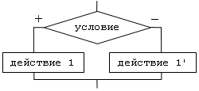

Ветвление - управляющая структура, организующая выполнение лишь одного из двух указанных действий в зависимости от справедливости некоторого условия.
Условие - вопрос, имеющий два варианта ответа: да или нет.

Нахождение максимума из двух чисел (иллюстрация из программы):